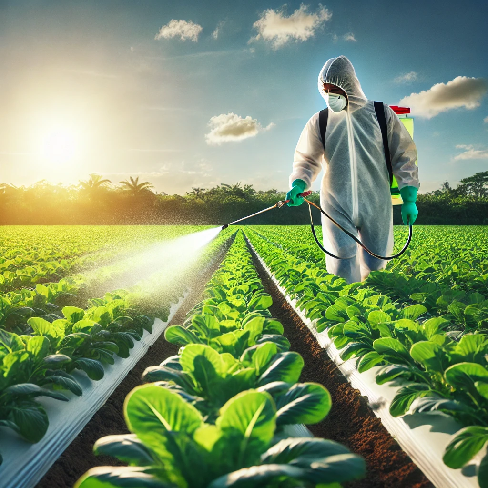

Welcome to Our Educational Website
This website is dedicated to educating students on the use of chemicals on fruits and vegetables. Learn about the impact of pesticides, health risks associated with chemical residues, and safer alternatives to conventional farming practices.
